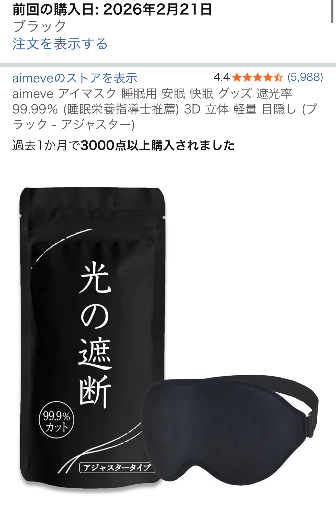

調整バンド付きアイマスク（ブラック）を実際に使って分かったメリット・デメリット【レビュー】

ここでは、実際のレビュー内容と一般的な睡眠グッズの知見を踏まえつつ、メリット・デメリットをバランスよく整理していきます。
調整バンド付きアイマスク（ブラック）の基本情報と特徴
今回取り上げるのは、Amazonで購入できる調整バンドタイプのブラックアイマスクです。口コミでは星5評価がついており、 「問題なく使えている」「装着感が良い」「下部分も遮光されている」といった声がありました。
一般的な調整バンド付きアイマスクは、頭のサイズに合わせて長さを変えられるため、ゴムがきつすぎて頭が痛くなったり、 逆にゆるすぎてズレてしまうといったストレスを減らしやすいのが特徴です。ブラックカラーは光を通しにくく、 見た目もシンプルで男女問わず使いやすい点が支持されています。
- 調整バンド：頭のサイズに合わせてフィット感を調整しやすい
- ブラックカラー：遮光性を高めやすく、汚れも目立ちにくい
- 下部分の遮光：頬・鼻のあたりから入る光を抑えやすい構造
実際の口コミから分かるメリット（装着感・遮光性）
口コミでは「問題なく使えていますし、装着感も良い」と評価されており、日常的に使っても違和感が少ないことがうかがえます。 アイマスクは、わずかな締め付けや生地のゴワつきが気になってしまうと継続利用が難しくなるため、装着感の良さは大きなポイントです。
また、「下部分も遮光されている」というコメントから、頬や鼻の付け根から入ってくるわずかな光も抑えやすい構造であることが分かります。 完全な真っ暗さを保証するものではありませんが、一般的な薄手のアイマスクと比べると、朝日や室内の常夜灯の光を和らげる効果は期待しやすいと言えます。
とくに、早朝の光で目が覚めやすい人や、夜勤明けで日中に睡眠を取りたい人にとって、 遮光性の高いアイマスクは「眠る環境を整えるためのサポートアイテム」として役立ちやすい印象です。
調整バンド付きアイマスク（ブラック）の詳細・価格をAmazonで確認する気になるデメリット・注意点【商品名＋デメリット】
一方で、調整バンド付きアイマスク（ブラック）にも、あらかじめ知っておきたい注意点があります。 ここで挙げる内容は一般的なアイマスク全般に言える部分も含まれており、すべての人に当てはまるとは限りませんが、 購入前のチェックポイントとして押さえておくと安心です。
-
長時間使用で耳や頭が疲れる可能性：
調整バンドはフィット感を高められる一方で、締め付けが強すぎると耳の後ろやこめかみ周辺が疲れることがあります。 最初は少しゆるめに調整し、自分に合った位置を探すことが大切です。 -
素材との相性：
肌が敏感な方は、生地や縫い目が当たる部分が気になる場合があります。 かゆみや赤みが出る場合は使用を中止し、肌に合う素材のアイマスクを検討したほうが安心です。 -
完全遮光ではない場合も：
口コミでは下部分の遮光性が評価されていますが、顔立ちや装着位置によってはわずかな光が入ることもあります。 「完全な真っ暗さ」を求める場合は、より立体構造のものや、鼻周りをしっかり覆うタイプとの比較検討がおすすめです。
こうしたデメリットは、アイマスクの性質上ある程度は避けにくい部分でもありますが、 調整バンドでフィット感を微調整しながら、自分にとってストレスの少ない位置を見つけることで軽減しやすくなります。
他の睡眠グッズとの組み合わせでより快適に【商品名＋比較】
口コミの中では、「鼻テープ、口テープ、耳栓、アイマスクはみなさんも用意しておくと安心かもしれません」といったコメントもありました。 これは、アイマスク単体だけでなく、複数の睡眠グッズを組み合わせることで、眠る環境をトータルで整えやすくなるという考え方です。
- 鼻テープ：鼻呼吸を意識したい人向けのサポートアイテム
- 口テープ：口呼吸を減らしたい人が就寝時に使うことがあるテープ
- 耳栓：生活音や外の騒音を和らげたいときの定番アイテム
- アイマスク：光を和らげ、目元を休めるためのサポートアイテム
もちろん、これらのグッズは医療行為ではなく、効果の感じ方には個人差があります。 ただ、「光」「音」「口呼吸・鼻呼吸」といった複数の要素にアプローチすることで、自分なりに眠りやすい環境を整えたい人にとっては、 調整バンド付きアイマスク（ブラック）は取り入れやすい選択肢のひとつと言えそうです。
こんな人に調整バンド付きアイマスク（ブラック）はおすすめ【ジャンル名＋おすすめ】
睡眠グッズ・日用品としてのアイマスクを検討している方の中でも、とくに次のような人には、 調整バンド付きアイマスク（ブラック）は候補に入れておきたいアイテムだと感じました。
- 朝日や室内の光で目が覚めやすい人
- 夜勤明けやシフト勤務で日中に眠ることが多い人
- ゴムバンドの締め付けが苦手で、フィット感を調整したい人
- シンプルなブラックデザインで性別問わず使えるものを探している人
一方で、顔にものが触れる感覚が苦手な方や、完全な真っ暗さを求める方は、 立体型や大型のアイマスクなど、別タイプとの比較検討もおすすめです。 自分の睡眠スタイルや好みに合わせて、無理なく続けられるアイテムを選ぶことが大切です。
まとめ：調整バンド付きアイマスク（ブラック）は「光対策の第一歩」にちょうど良い
調整バンド付きアイマスク（ブラック）は、装着感の良さと下部分までの遮光性が口コミで評価されている、 シンプルで使いやすい睡眠グッズです。デメリットとして、締め付け具合や素材との相性には注意が必要ですが、 バンドの長さを調整しながら自分に合う位置を探せば、日常使いしやすいアイテムになりやすいと感じました。
鼻テープ・口テープ・耳栓などと組み合わせて、「光」「音」「呼吸」のそれぞれを整えていくことで、 少しずつ自分に合った睡眠環境を作っていくことができます。アイマスクはその中でも取り入れやすい一歩目として、 検討する価値のある日用品だと言えるでしょう。
調整バンド付きアイマスク（ブラック）をAmazonでチェックする※商品情報・価格・在庫状況は記事閲覧時点と異なる可能性があります。最新情報は必ずAmazonの商品ページでご確認ください。